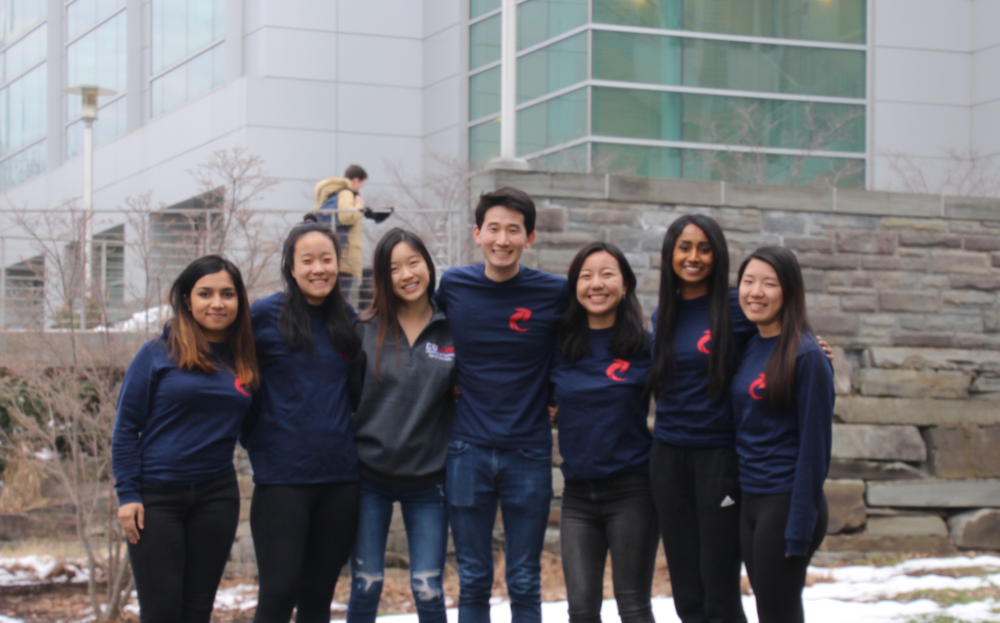
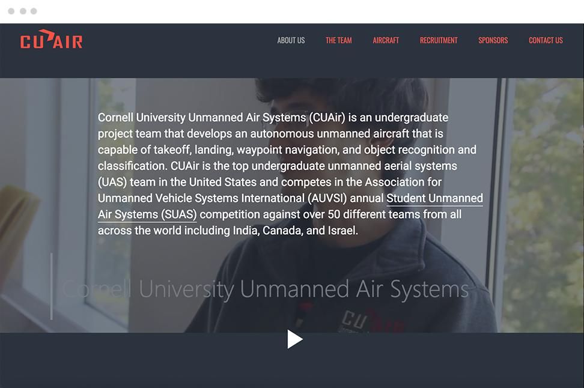
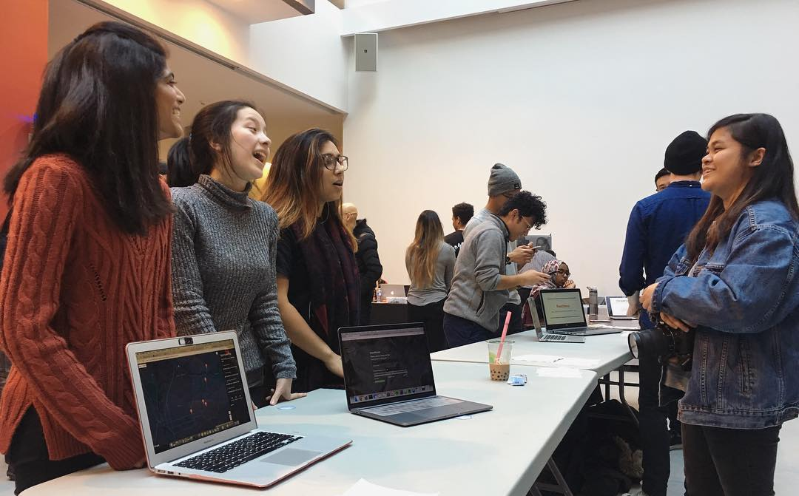
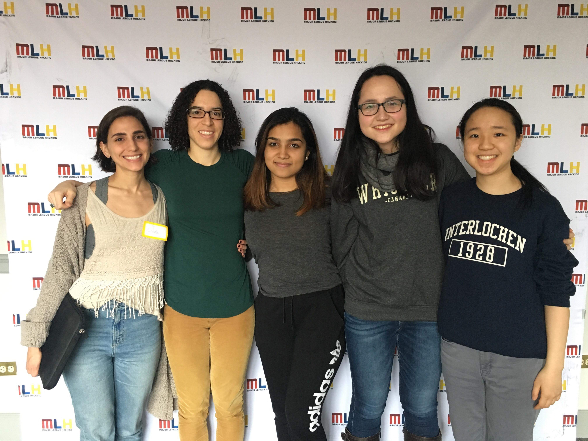
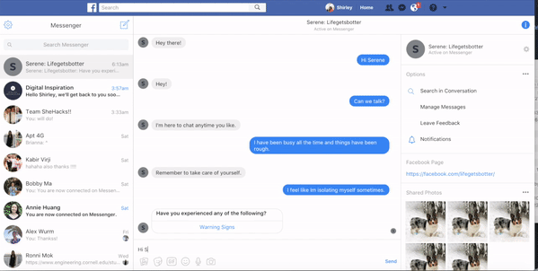

organizations


Unmanned Air Systems
Website Lead
CUAir is a project team that won 2nd of 50 teams internationally that designs, builds, and tests autonomous air vehicles.
Designed, developed, and tested the current responsive website and increased social media and community presence of the team.
website development/maintenance
graphics design
communication
public relations
outreach
visit our website!
CUAir is a project team that won 2nd of 50 teams internationally that designs, builds, and tests autonomous air vehicles.
Designed, developed, and tested the current responsive website and increased social media and community presence of the team.

Social Director
WICC's goal? To encourage prospective women and to expand their opportunities, and provide support to existing women in computing fields so that they can carve their own paths in CS.
In previous semesters I was Secretary and Advisor.
communication
leadership
learn more
WICC's goal? To encourage prospective women and to expand their opportunities, and provide support to existing women in computing fields so that they can carve their own paths in CS.
In previous semesters I was Secretary and Advisor.
projects

CS 3110 Final Project
Won most time ever spent on a project in existence ever.
ocaml
javascript
check it out
Won most time ever spent on a project in existence ever.


Hack the Valley 2
A web app that allows you to enter several destinations and returns the optimal route to reach all of those places in the shortest amount of time, and total cost of travel with an Uber.
flask
uber api
google [maps] api
learn more
A web app that allows you to enter several destinations and returns the optimal route to reach all of those places in the shortest amount of time, and total cost of travel with an Uber.


SheHacks Boston
A mental health awareness bot to converse with that will appropriately responds, pre-diagnoses, suggests playlists/songs, and locates the right professionals.
node.js
google [maps] api
spotify api
learn more
A mental health awareness bot to converse with that will appropriately responds, pre-diagnoses, suggests playlists/songs, and locates the right professionals.